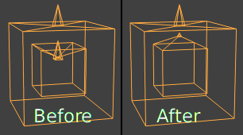
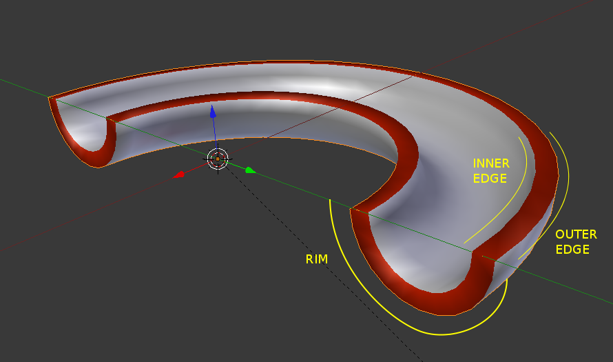

加固修改器¶
The Solidify Modifier takes the surface of any mesh and adds depth to it.
选项¶
Solidify Modifier.
- 厚度
- 待加固的深度。
- 偏移量
- A value between (-1 to 1) to locate the solidified output inside or outside the original mesh. Set to 0.0, the solidified output will be centered on the original mesh.
- 夹钳
A value between (0 to 2) to clamp offsets to avoid self intersection.
Clamp Offset.
- 顶点组
Only vertices in this group are solidified. Their weights are multiplied by the thickness, so vertices with lower weights will be less thick.
- 反转
- 反转顶点组，让 不 属于顶点组的顶点加固。
- 因子
顶点权重
- On 0.0 , vertices with zero weight will have no thickness at all.
- On 0.5 , vertices with zero weight will be half as thick as those with full weight.
- On 1.0 , the weights are ignored and the thickness value is used for every vertex.
- 折痕
These options are intended for usage with the Subdivision Modifier.
边沿和棱。在这个例子里，物体被指定第二个之前用来给边沿上红色的材质
- 内部
- 为内部边设置折痕。
- 外部
- 为外部边设置折痕。
- 边沿（辋）
- 为边沿边设置折痕。
- 翻转法线。
- 翻转所有几何形体的法线（包括内部和外部表面）。
- 均匀厚度
- 通过调节锐角来维持厚度，这样做有时可以提升质量，但也增加了计算时间。
- 高质量法线
- 通过计算法线来获取更均匀的厚度。这样做有时可以提升质量，但也增加了计算时间。
- 填充边沿
- 填充内部和外部边之间的间隙。
- 仅边沿
- Will not have an extruded surface parallel to the original but instead will only have the perpendicular rim.
{kind=link}
Note
填充边沿 和 仅边沿 仅在 非流形 物体上有区别，因为 边沿 是从原几何形体的边界产生的。
- 材质索引偏移量
对新的几何体选择不同的材质使用；这作为加固面原材质的偏移量而使用。
- A value of 0 means it will use the same material.
- A value of 1 means it will use the material immediately below the original material.
- A value of -2 means the material two positions above the original material will be used.
它们夹钳到最上和最下材质的材质槽里。
- 边沿（辋）
- 同样的，你也可以给另一个材质到边沿的面上。
Important
修改器的厚度是用局部顶点坐标计算的。如果物体用了非均匀缩放，厚度在物体不同的边上会有所变化。
To fix this, either apply Ctrl-A or clear Alt-S scale.
Known Limitations¶
均匀厚度¶
Solidify thickness is an approximation. While "Even Thickness" and "High Quality Normals" should yield good results, the final wall thickness is not guaranteed and may vary depending on the mesh topology.
In order to maintain precise wall thickness in every case, we would need to add/remove faces on the offset shell, something this modifier does not do since this would add a lot of complexity and slow down the modifier.